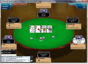

| wiki | search |
  PokerMuck running on a ring game on Full Tilt Poker
PokerMuck running on a ring game on Full Tilt Poker
We are one of the few poker HUDs to support Seals with Clubs (last updated in December 2015 for version 1.0.0.24).
Contents |
Getting The Software
- Windows Installer: setup.exe
Some computers might also need the .NET Framework 4.
Keep the Project Alive
This program remains up to date thanks to the generous donations of its users. If you find the software useful, please donate the equivalent of a bet to keep our software up to date.
Bicoin wallet for donations: 17A9QgZzpNwDvB77SMiwULBbLHyecDPXpg
Bitcoins raised so far: 0.53 BTC
Features
- HUD
- It is extremely useful to know how your opponents are playing, especially in online play where betting patterns are the only vital information we have at our disposal to make accurate decisions. A HUD (Heads Up Display) is a window that will tell you quick useful information about how each of your opponents is playing. Are they aggressive? How many flops have they seen? How many times have they raised? Are they frequently attacking your blind?
- Display mucked hands
- On most online poker sites, whenever you go to showdown and your opponents muck their hands you don't get to see what they were holding. This information however is stored in the hand history and can be retrieved easily. Poker Muck makes this process easier for you by constantly monitoring the hand history.
- Real time hand recognition and odds display
- Have you ever wondered what would be the chance of hitting a particular hand given the current situation? Of course you could memorize some odds numbers or look this information up in a table. But this is time consuming (and can be imprecise). PokerMuck has a sophisticated image recognition algorithm that matches your poker table screen and detects what cards you are holding (including the community cards), displaying useful information on the quality of your hand and the odds you need to improve to a better hand.
- Advanced statistics
- If the information in the HUD is not enough, you pass onto more advanced statistics. This program not only shows the frequency of actions that a player might be making. It goes as far as analyzing each betting pattern and associate each action with the strength of the player's hand. Want to know if your opponent is capable of betting or check raising with absolutely nothing? What's your opponent most likely to do with a straight/flush draw? A hand rating engine evaluates each hand on every street whenever a player reaches showdown.
- Multitable support
- Doesn't matter how many games you are simultaneously playing. PokerMuck is designed to handle multitabling.
Screenshots
Click here to see the screenshots.
Clients Supported
- PokerStars (Fixed-Limit and No-Limit Hold'em Tournaments and Ring)
- Full Tilt Poker (No-Limit Hold'em Tournaments and Ring)
- Party Poker (Fixed-Limit and No-Limit Hold'em Tournaments and Ring)
- GD Poker (No-Limit Hold'em Tournaments and Ring)
- Seals With Clubs (Fixed-Limit and No-Limit Hold'em Tournaments and Ring)
Also check the list of clients that support hand recognition.
Get the C# Sources
- You can download the latest sources from Github: https://www.github.com/pierotofy/PokerMuck
Manuals
- How To Use Poker Muck to Play Better Poker
- Understanding the HUD
- Hand Rating in Poker Muck
- How To Create a Color Map
- Why everybody should use a statistical tool to play online poker
Contribute
- Please fork the project on Github and issue a pull request.
- If you have questions drop me an e-mail: admin [at] pierotofy [dot] it.
- If you are a user and found a bug, create a new issue here: https://github.com/pierotofy/PokerMuck/issues